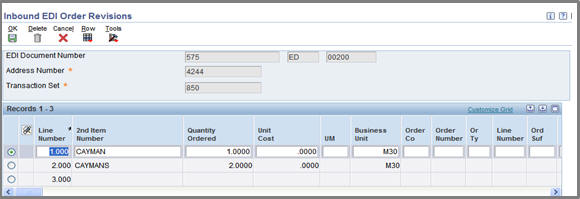
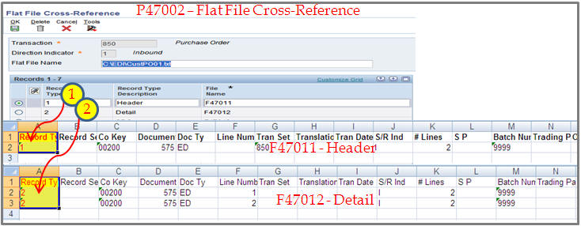

The audience for this note is someone with developer level knowledge. The steps below can be used for MicroSoft Excel 2003, 2007 and 2010. For step by step guide in MS Word format, click HERE (ExcelToFlatFile_StepByStepGuide.docx).
This document is to guide the example of how to create flat file to run R47002C which is to create SQL format file to run R47011 - EDI Inbound Purchase Order Edit/Create.
Note:
This document may guide one example of steps you may implement but this steps may not be the best practice in some environment
It is possible to fulfill same purpose through Oracle's JDEdwards Table Conversion Tools
Steps describe here is adapted code from 3rd party, Microsoft, so Oracle does not bear responsibility for outcome you may get in converting excel to text format file
Depends on the version of Microsoft Excel the result can be vary, so look for relevant information from Microsoft Support
Enabling macros may cause security issue in your environment so implement this with care
This example is done based on JDEdwards EnterpriseOne 9.0 release.
One of method to implement this is,
1. Add in Macro (e.g., QuoteCommaExport) into Excel
This option is found at View>Macro
Click "Create" to add new macro
Copy and paste same code from library of Microsoft
Save excel file with specific name at a specific location as you are to open exported excel file from this file saved
2. Create data through related interactive application to populate the target table data layout 
It is important to populate "Record Type" because this is key to determine target table
R47002C (Inbound Flat File Conversion) is converting text format file into SQL format file mechanically from left to right so it is important to have all the necessary information
Make sure that the value for processing parameters (in Separators tab),
1. Enter the field delimiter: , (comma)
2. Enter the text qualifier: " (double-quotation)
Some target tables (xxxZ1) may not have Record Type in the first column of table. For this case you need to manually insert additional column (Possibly you may add it in excel export because conversion macro will convert it as you wish)
3. Export both Header and Detail of target tables (F47011/F47012) through databrowser (There should not be any user override as the sequence of column in target tables are same with that of databrowser) 
Note:
Do not change the order of columns
Same information can be found from your central object (F98711 - Table Columns) using 'order by tdpseq'
4. Repeat it for any target tables you want to populate through R47002C
5. Verify that for this example, Record Types are populated If you do not have this column in converting flat file for other purpose, this column is to be added
6. Run macro you add-in
Save it with complete path and extension
Repeat it for detail
Note:
You may not need to export all the columns so you may highlight block of data then click Run (macro)
It has to contain the first column which is crucial information which contains Record Type (Header/Detail and additional data)
either before run macro
or manually add it into created text format file itself
7. Verify that two files are created
8. Open header/detail files and combine/rename it (manual copy and paste)
Unlike fopen() functions in C above macros does not append
Renamed as "CustPO01.txt" and saved at C:\EDI\CustPO01.txt
This is for testing purpose, actual file can be stored any location within your network
9. Specify path and file name through P47002 for target files F47011/F47012
R47002C can handle one file a time so two header and detail have been combined above Note that path and file name is defined at header level
10 Run R47002C|XJDE0001 for Inbound PO
11. Verify data are created into Target Header/Detail (F47011/F47012)

 > or look for it from Microsoft website http://msdn.microsoft.com/en-us/library/Aa203726.aspx This code is to work for Excel 2003, Excel 2007 and Excel 2010
> or look for it from Microsoft website http://msdn.microsoft.com/en-us/library/Aa203726.aspx This code is to work for Excel 2003, Excel 2007 and Excel 2010